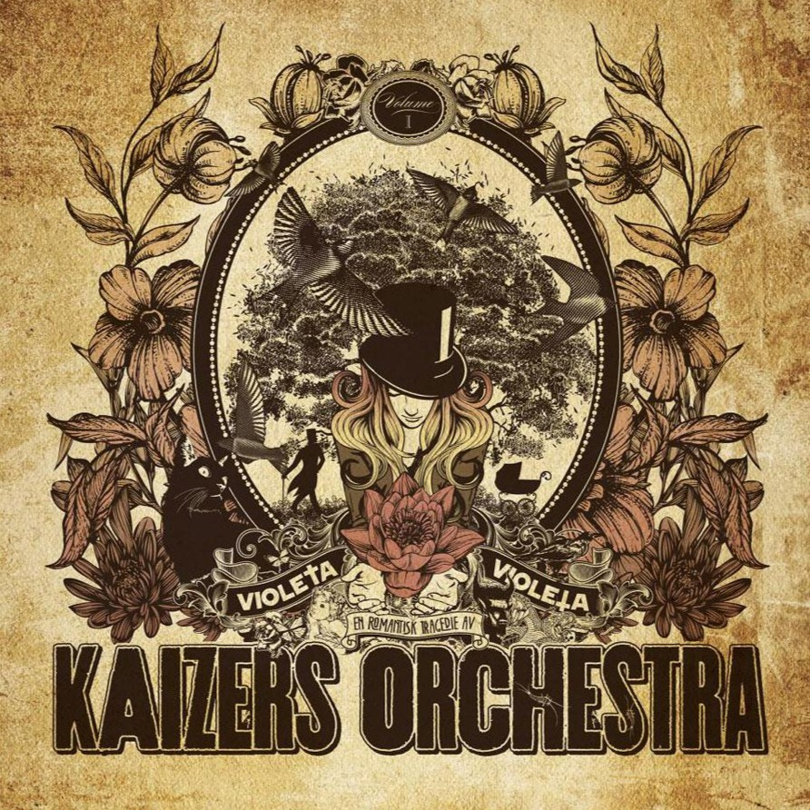

Violeta Violeta Volume I
|  |
|
Innspilt og mikset i Duper Studio Bergen, vinter og vår 2010.
Produsert av Jørgen Dupermann Træen, Yngve Leidulv Sætre og Janove Ottesen
Assistenttekniker: Anand Chetty
Teknikere: Iver Sandøy og Bård Ingebrigtsen
Mastret av Björn Engelmann i Cutting Room, Stockholm
Design: Martin Kvamme
Alle sanger av Janove Ottesen
Stryk og blås arrangementer: Janove Ottesen
Transkribert og tilrettelagt for orkester av Øyvind Grong
Kaizers Orchestra:
Janove Ottesen: Vokal
Geir Zahl: Gitar
Terje Winterstø Røthing: Gitar
Helge Risa: Tangenter
Rune Solheim: Trommer
Øyvind Storesund: Kontrabass & pedalbass
Gjester:
Strykere på Philemon Arthur & The Dung, Diamant til kull, Femtakt filosofi, Hjerteknuser og Sju bøtter tårer er nok, Beatrice:
Haldi Rønning: Fiolin
Mari Persen: Fiolin
Karoline Vik Hegge: Bratsj
Matias J. Monsen: Cello
Lykke Sofie Myras: Vokal på En for orgelet, en for meg og Svarte katter og flosshatter
Anand Chetty: Kubjelle på Din kjole lukter bensin, mor, kor på Philemon Arthur The Dung
Byvind Grong: Tuba og trombone på Femtakt filosofi, tuba på Svarte katter & flosshatter
Kjetil Møster: Sax på Psycho under min hatt og Svarte katter & flosshatter
Iver Sandoy: Kor på Philemon Arthur & The Dung, Marimba på Hjerteknuser
Stavanger symfoniorkester spiller på Tumor i ditt hjerte og Svarte katter & flosshatter. Dirigent: Trond Korsgaard
Jørgen Træen: MS20 på Hjerteknuser, ølfløyte på En for orgelet, en for meg
Yngve L. Satre: Piano plingplong på Hjerteknuser, koring på Tumor i ditt hjerte
Teresia Satre Aarskog, Rebekka Setre Aarskog, Jarle. Solheim, Maria K. Solheim:
Kor og klapping på Philemon Arthur & The Dung
Kaizers Orchestra skylder så mang en takk til følgende mennesker og virksomheter:
Eivind Brydoy, Johan Kriftian Berntsen, Rudolf Reim, Thomas Olavsen, Simen Idsøe Eidsvåg, Hans Petter Haaland, Per Bjorn Olsen, Tiger of Sweden, Luthman, Em Nordic, www.ftringsite.com. Sennheiser, Nils og Cementen, Jos og Nils på PAP. Sigvards Pauna og 4sound på Kvadrat, Tom Erik Antonsen på Photofono for Markbass utStyr, Hans Ole Kristiansen og Inge Riska i Studio 11O, Kjetil Steinskog, Eirik Lye for pedalbasslan, Petter Stangjordet og Hornaas Musikk, Knut på Rufo, Marianne Christensen, Norsk Musikk, Havard Gjestvang, Audio Media, Gunn Meller, ProPerc, Thon Hotell Bryggen Bergen, Statoil for oljefat, Theon Productions, Jan, Britt-Synneve & Sigrid, Else Marit, Ragnhild, Kristin, Elise, Emma & Bjørnar, Maria Louise, Susanne, Oliver Vera, Rune, Gunn Berit, Merete, Selve Rikke, Kjell, Camilla, Sofie & William. Vigdis Svein Inge, Anne Brit, Stig & Rebekka, Jostein & Grethe, Micke, Ti, Dag Sindre, Børge, Tore, Stein, Morten, Øyvind, Ane, Knut, Ståle, Per Morten, Cathrine, Holbergegate Teglverksbakken, Henrik Eide, Beatrice, Violeta, Kenneth
Plateselskap: Petrolium Records
Violeta Violeta Volume I er det sjette albumet til Kaizers Orchestra og det første i triologien Violeta Violeta. Bandet var tilbake i Duper studio i Bergen med Jørgen Træen, Yngve Sætre og Janove Ottesen som produsenter. Albumet nådde toppen av VG-lista og hadde en sang som tok bandet fra et "No hit wonder" band til et "One hit wonder" band, Hjerteknuser. Kaizers Orchestra jobbet intens med denne trilogien fra 2009 helt til avkjedskonserten i stavanger i september 2013.